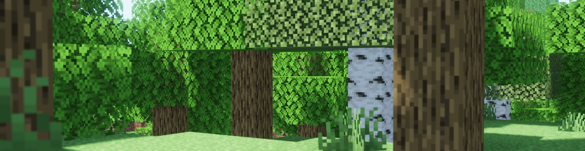
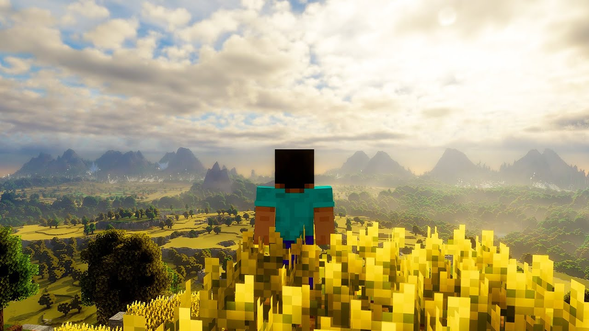

Hoje eu criei um mundo no Minecraft e queria que VOCÊ jogasse para mim fazer uma pesquisa, de como a maioria das pessoas começam um mundo Sobrevivência.
Pegar Madeira
Explorar
Depois que você pegou madeira você faz o que?
Fazer uma Crafting Table
Fazer Stick
Você decidiu explorar e acabou achando uma
Caverna
Vila
Depois disso
Faço ferramentas
Faço uma pequena base
Você faz o que com o Stick?
Faço Tochas para poder Minerar
Faço Tochas para quando Anoitecer
Você gostuma procurar e pegar o que?
Pegar Ferro
Procurar Diamantes
Na Vila você faz o que
Saqueio a Vila Inteira
Mato o Iron Golen
Com Ferramentas boas você costuma fazer o que mais?
Matar animais para coletar comida
Fazer uma casa
Você faz uma casa com o que?
Pedra/Madeira
Com Tochas você faz o que na Caverna
Pegar Ferro
Procurar Diamantes
E a noite você faz o que?
Ilumino a Área
Uso para me ajudar a Construir a base
Com ferro em mãos...
Faço Armaduras e Ferramentas de Ferro
Com diamantes eu
Pego Obisidian com Picareta de Diamante
Faço uma Enxada de Diamante
Logo depois disso
Vou procurar Obisidian na Caverna e ir para o Nether
Vou fazer minha casa
Você pega os ferros e faz o que?
Faço Armaduras e Ferramentas de Ferro
Vou procurar Obisidian na Caverna e ir para o Nether
Com bastante comida você continua como?
Vou começar a Minerar
Vou fazer minha casa
Com baomo?
Vou começar a Minerar
Vou fazer minha casa
Depois de ter pegado algumas Obisidian você
Faço um Portal do Nether
Depois que você constrói sua Casa
Vou começar a Minerar
Ir para o Nether
Depois que você chega no Nether o que acontece
Eu morro.
